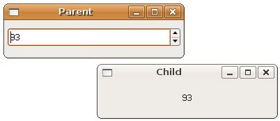

在Linux系統中，想要在兩個處理程序之間傳送資料，必須使用pipe，您可以使用pipe()函式來開啟pipe，您要傳入兩個File Descriptor：
gint parent_to_child[2];
if(pipe(parent_to_child) == -1) {
g_error("錯誤: %s\n", g_strerror(errno));
return 1;
}
if(pipe(parent_to_child) == -1) {
g_error("錯誤: %s\n", g_strerror(errno));
return 1;
}
開啟pipe之後，任何寫入parent_to_child[1]的資料，可以從parent_to_child[1]讀得。
在 GIOChannel 與 檔案處理 中， 看過如何使用GIOChannel 來處理檔案，在Linux中很多物件或資料都被視作檔案，所以您也可以利用GIOChannel來處理pipe的資料，您可以加入watch，監看 GIOChannel中的資料，當有資料進行讀寫時會發出事件，您可利用callback函式予以處理。
您可以使用g_io_channel_unix_new()函式從pipe的File Descriptor中建立GIOChannel，例如，假設input[0]是pipe中寫出資料的File Descriptior，可以如下建立GIOChannel：
GIOChannel *channel_read = g_io_channel_unix_new(input[0]);
if(channel_read == NULL) {
g_error("錯誤: 無法建立 GIOChannels！\n");
}
if(channel_read == NULL) {
g_error("錯誤: 無法建立 GIOChannels！\n");
}
若要對GIOChannel進行監看，可以使用g_io_add_watch()函式，例如：
if(!g_io_add_watch(channel_read, G_IO_IN | G_IO_HUP,
(GIOFunc) iochannel_read, (gpointer) data)) {
g_error("錯誤: 無法對 GIOChannel 進行監看\n");
}
(GIOFunc) iochannel_read, (gpointer) data)) {
g_error("錯誤: 無法對 GIOChannel 進行監看\n");
}
第二個參數是監看的條件：
- G_IO_IN：有待讀取資料
- G_IO_OUT：可寫入資料
- G_IO_PRI：有待讀取的緊急資料
- G_IO_ERR：發生錯誤
- G_IO_HUP：連接掛斷
- G_IO_NVAL：無效請求，File Descriptor沒有開啟
第三個參數是監看條件發生時的callback函式，第四個參數是傳遞給callback的資料。
您可以使用g_io_channel_write_chars()函式寫入字元至GIOChannel中，例如：
GIOStatus ret_value = g_io_channel_write_chars(
channel, text->str, -1, &length, NULL);
if(ret_value == G_IO_STATUS_ERROR) {
g_error("錯誤: 無法寫入 pipe！\n");
}
else {
g_io_channel_flush(channel, NULL);
}
channel, text->str, -1, &length, NULL);
if(ret_value == G_IO_STATUS_ERROR) {
g_error("錯誤: 無法寫入 pipe！\n");
}
else {
g_io_channel_flush(channel, NULL);
}
可使用g_io_channel_read_line()從GIOChannel中讀入資料：
ret_value = g_io_channel_read_line(channel, &message, &length, NULL, NULL);
if(ret_value == G_IO_STATUS_ERROR) {
g_error("錯誤: 無法讀取！\n");
}
if(ret_value == G_IO_STATUS_ERROR) {
g_error("錯誤: 無法讀取！\n");
}
以下這個程式是個結合GIOChannel與Pipe的範例，程式會有fork一個子程序，父程序透過Pipe將資料傳給子程序，並利用 GIOChannel加入watch，當父程序寫入資料時，子程式執行callback函式以作對應的資料處理，執行結果中，程式會有兩個視窗，分別屬於 父子程序，父程序視窗的 GtkSpinButton 拉動時，子程序視窗會顯示對應數字：
- giochannel_pipe_demo.c
#include<gtk/gtk.h>
#include<errno.h>
#include<unistd.h>
void value_changed_callback(GtkSpinButton *spinButton, GIOChannel *channel);
gboolean iochannel_read(GIOChannel *channel, GIOCondition condition, GtkLabel *label);
void setup_parent(gint output[]);
void setup_child(gint input[]);
int main(int argc, char *argv[]) {
gint parent_to_child[2];
if(pipe(parent_to_child) == -1) { // 開啟Pipe
g_error("Error: %s\n", g_strerror(errno));
return 1;
}
// fork 子程序
switch(fork()) {
case -1:
g_error("錯誤: %s\n", g_strerror(errno));
break;
case 0: // 這是子程序
gtk_init(&argc, &argv);
setup_child(parent_to_child);
break;
default: // 這是父程序
gtk_init(&argc, &argv);
setup_parent(parent_to_child);
}
gtk_main();
return 0;
}
// GtkSpinButton的callback
void value_changed_callback(GtkSpinButton *spinButton, GIOChannel *channel) {
GIOStatus ret_value;
gint value;
GString *text;
gsize length;
value = gtk_spin_button_get_value_as_int(spinButton);
text = g_string_new("");
g_string_sprintf(text, "%d\n", value);
// 寫入資料至 GIOChannel
ret_value = g_io_channel_write_chars(channel, text->str, -1, &length, NULL);
if(ret_value == G_IO_STATUS_ERROR) {
g_error("錯誤: 無法寫入 GIOChannel ！\n");
}
else {
g_io_channel_flush(channel, NULL);
}
}
gboolean iochannel_read(GIOChannel *channel,
GIOCondition condition, GtkLabel *label) {
GIOStatus ret_value;
gchar *message;
gsize length;
if(condition & G_IO_HUP) {
g_error("錯誤: Pipe 已中斷！\n");
}
ret_value = g_io_channel_read_line(channel, &message, &length, NULL, NULL);
if(ret_value == G_IO_STATUS_ERROR) {
g_error("錯誤: 無法讀取！\n");
}
message[length-1] = 0;
gtk_label_set_text(label, message);
return TRUE;
}
void setup_parent(gint output[]) {
GtkWidget *window;
GtkWidget *spinButton;
GIOChannel *channel_write;
window = gtk_window_new(GTK_WINDOW_TOPLEVEL);
gtk_window_set_title(GTK_WINDOW(window), "Parent");
gtk_window_set_default_size(GTK_WINDOW(window), 250, 50);
spinButton = gtk_spin_button_new_with_range(0.0, 100.0, 1.0);
gtk_container_add(GTK_CONTAINER(window), spinButton);
g_signal_connect(GTK_OBJECT(window), "destroy",
G_CALLBACK(gtk_main_quit), NULL);
// 關閉不用的 Pipe 輸出
close(output[0]);
// 建立 GIOChannel
channel_write = g_io_channel_unix_new(output[1]);
if(channel_write == NULL) {
g_error("錯誤: 無法建立 GIOChannels！\n");
}
g_signal_connect(G_OBJECT(spinButton), "value_changed",
G_CALLBACK(value_changed_callback), (gpointer) channel_write);
gtk_widget_show_all(window);
}
void setup_child(gint input[]) {
GtkWidget *window;
GtkWidget *label;
GIOChannel *channel_read;
window = gtk_window_new(GTK_WINDOW_TOPLEVEL);
gtk_window_set_title(GTK_WINDOW(window), "Child");
gtk_window_set_default_size(GTK_WINDOW(window), 250, 50);
label = gtk_label_new("0");
gtk_container_add(GTK_CONTAINER(window), label);
g_signal_connect(GTK_OBJECT(window), "destroy",
G_CALLBACK(gtk_main_quit), NULL);
// 關閉不必要的 Pipe 輸入
close(input[1]);
channel_read = g_io_channel_unix_new(input[0]);
if(channel_read == NULL) {
g_error("錯誤: 無法建立 GIOChannels！\n");
}
if(!g_io_add_watch(channel_read, G_IO_IN | G_IO_HUP,
(GIOFunc) iochannel_read, (gpointer) label)) {
g_error("錯誤: 無法對 GIOChannel 加入 watch！\n");
}
gtk_widget_show_all(window);
}執行的一個結果畫面如下所示：
